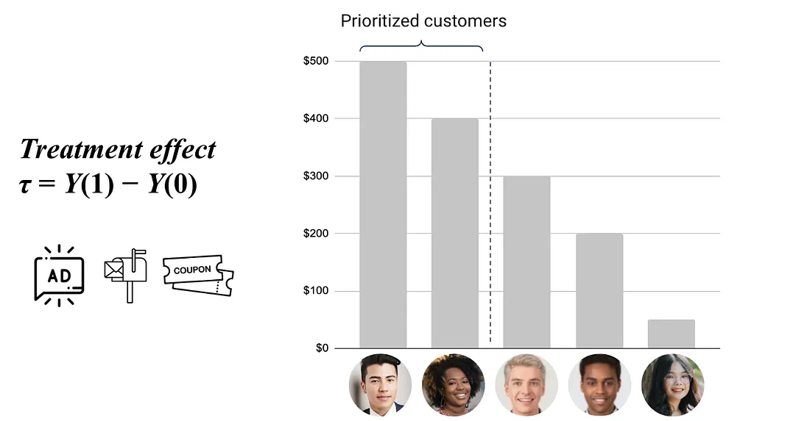
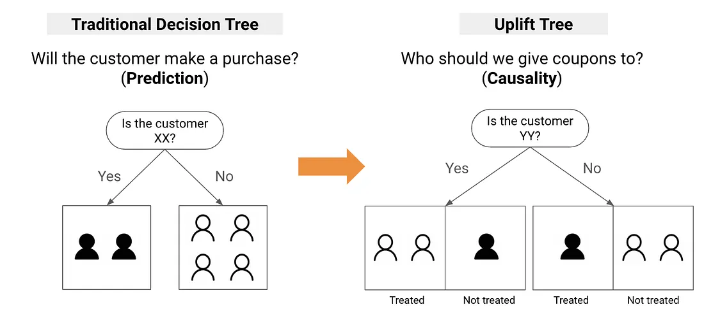
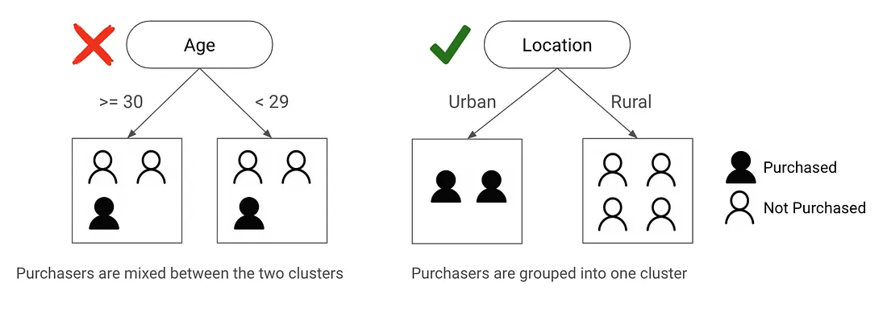
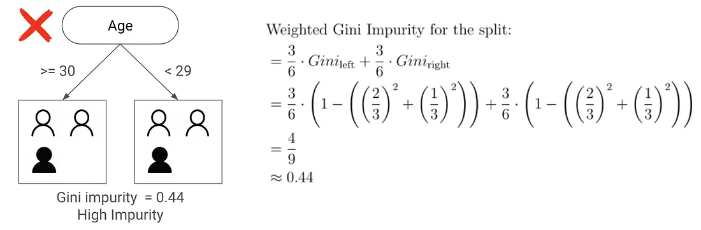

3.5 Uplift Modeling for Targeting
Who should you actually target to maximize sales? Most marketing teams use a response model: predict who is most likely to buy, then send coupons to those customers. This seems logical, but it often wastes money.
Here’s the problem: many customers who are likely to buy will do so whether or not you send them a coupon. Giving them a discount just gives away margin without increasing sales. At the same time, there are customers with a moderate chance of buying who might convert if you nudge them. These are the people where the coupon actually makes a difference.
- A response model predicts: \(P(\text{purchase})\)
- An uplift model predicts: \(P(\text{purchase} | \text{treated}) - P(\text{purchase} | \text{not treated})\)
A response model ranks customers by how likely they are to buy. An uplift model ranks them by how much the treatment actually changes their behavior. These rankings can be very different. For example, a customer with an 80% chance of buying might have zero uplift (a Sure Thing), while someone with a 30% chance might have a 15% uplift (a Persuadable).

The Four Customer Types
Now, let’s take a closer look at the customers to be targeted. We can segment customers into four types based on how they respond to treatment:

- Persuadables: Will buy only if they receive the treatment. These are the ideal targets: the coupons change their behavior. Your entire marketing ROI comes from this group.
- Sure Things: Will buy no matter what. Sending them a coupon costs you the discount but generates no incremental revenue.
- Lost Causes: Won’t buy regardless of whether they receive the coupon. Targeting them wastes both the coupon cost and any impression cost.
- Sleeping Dogs: Will not buy if they receive the coupon, but would buy without it. These customers are actively harmed by the intervention. The coupon may trigger annoyance, unsubscription, or brand damage.
“Don’t wake the Sleeping Dogs” is not just a metaphor. In real campaigns, some customer segments actually show negative uplift from coupons. Uplift modeling helps you find these segments so you can avoid targeting them.
From Decision Trees to Uplift Trees
This four-type framework gives you a clear target. The next question is: how do you actually build a model that separates Persuadables from Sure Things? Earlier, we looked at meta-learners that wrap standard ML models. Uplift trees take a different route. They are decision trees specifically designed to find where the treatment effect varies the most.
A traditional decision tree asks: “Will the customer purchase?” An uplift tree asks: “Who should we give coupons to?”

How Traditional Trees Split
Consider two possible trees. The tree on the left splits by “Age,” while the tree on the right splits by “Location.” Which tree provides a better split?

The tree on the right does a better job because it separates purchasers from non-purchasers more clearly. We measure this using Gini Impurity, which tells us how mixed each node is:
\[\text{Gini} = 1 - (p_1^2 + p_0^2)\]
where \(p_1\) is the probability of purchase and \(p_0\) is the probability of no purchase.

But here’s the key point: Gini measures how well you can predict purchases, not uplift. A tree that predicts who will buy is not the same as a tree that finds where the treatment actually changes behavior.
How Uplift Trees Split
An uplift tree splits to maximize the difference in treatment effect between child nodes. Instead of Gini impurity, it uses a divergence metric that measures how differently treated and control groups behave within each node:
- KL Divergence: measures how the treatment group’s outcome distribution diverges from the control group’s.
- Euclidean Distance: simpler metric based on the squared difference between treatment and control response rates.
- Chi-Squared: tests whether the difference between treatment and control is statistically significant within each node.
In practice, KL Divergence is the most commonly used and the default in most uplift tree implementations. Euclidean Distance is simpler and computationally faster but less sensitive to small differences. For most marketing applications, the default (KL Divergence) works well.
Training an Uplift Model
Several open-source libraries implement uplift trees with these splitting criteria — causalml’s UpliftRandomForestClassifier and scikit-uplift’s SoloModel / ClassTransformation families, among others. They share a common shape: fit(X, treatment, y) returns a model whose predict(X) produces an uplift score per customer.
A meta-learner gives you the same ingredient by another route. A T-Learner CATE — the predicted incremental conversion probability from §3.4 — is itself a per-customer uplift score, and we can hand it to the same evaluation and targeting tools:
# CATE from §3.4 is already an uplift score per customer.
from econml.metalearners import TLearner
from lightgbm import LGBMRegressor
t_learner = TLearner(models=[LGBMRegressor(), LGBMRegressor()])
t_learner.fit(Y=y_train, T=treatment_train, X=X_train)
uplift_score = t_learner.effect(X_eval) # one number per held-out customerThe full runnable example — fitting six meta-learners on the Criteo Uplift dataset, then evaluating their rankings — lives in the §3.4 companion notebook (see callout in Meta Learners for Treatment Effects).
Evaluating Uplift Models
Standard classification metrics like AUC or F1 measure how well you predict outcomes, not how well you target. For uplift modeling, you need metrics that are designed for targeting quality.
The uplift curve (or gain curve) plots cumulative incremental conversions against the fraction of the population targeted. Customers are ranked by their predicted uplift score, and we compute the total uplift gained as we move down the ranking:
- A good uplift model will concentrate most of the incremental conversions in the top deciles. If you target the top 20% of customers, you should capture most of the total uplift.
- A random targeting strategy follows a straight diagonal line.
- The area between the model curve and the random baseline is the AUUC (Area Under the Uplift Curve).
scikit-upliftreports it normalized to[0, 1]— 1.0 is a perfect ranking, 0.0 is no better than random.
from sklift.metrics import uplift_curve, uplift_auc_score
# uplift_score is any per-customer ranking signal — a CATE from §3.4,
# the output of an uplift tree, anything you want to grade.
auuc = uplift_auc_score(y_true, uplift_score, treatment)
x, y = uplift_curve(y_true, uplift_score, treatment)The §3.4 companion notebook (§10) runs this exact recipe on the T-Learner CATE for the Criteo Uplift dataset and plots the curve against a random-targeting diagonal — the model curve sits clearly above it, which is what tells you the ranking is doing work.
The Qini curve is a similar metric, but it normalizes by the number of treated customers instead of the whole population — more robust when the treated share varies across score buckets. Both metrics help you see if your model is actually ranking customers by their true uplift.
From Scores to Targeting Decisions
An uplift model gives you a score for every customer. The simplest way to use it is to rank all customers by their uplift score, split them into deciles, and then target the top N deciles that fit your budget.
import pandas as pd
scored = pd.DataFrame({'customer_id': customer_id, 'uplift': uplift_score})
ranked = scored['uplift'].rank(method='first', ascending=False)
scored['decile'] = pd.qcut(ranked, q=10, labels=False) # 0 = highest upliftIf your budget lets you target 20% of customers, just take the top two deciles. This gives you a list of customers ordered by expected incremental value.
The §3.4 companion notebook (§9) extends this with a per-decile observed-uplift table and a net-value column that subtracts treatment cost — the same workflow, made operational.
Guardrails
Two failure modes to watch for:
Margin erosion. The most common failure in coupon targeting is when the extra revenue from coupons is less than the cost of the discounts. Always include the coupon cost in your uplift calculation: net uplift = estimated treatment effect times margin minus coupon cost. Only target customers where the expected extra margin is greater than the coupon value.
Customer fatigue. Even Persuadables will stop responding—or even disengage—if you contact them too often. Set frequency caps (limits on how many times you contact each customer) and watch if uplift drops for customers who have been contacted recently.
That wraps up Part 3. We started with a common question: a colleague claims the coupon doubled the purchase rate, but we saw that was just selection bias. From there, we built a toolkit to answer the real question: not just whether a campaign works, but who actually benefits. We covered A/B testing, quasi-experiments, meta-learners, and uplift modeling. The real goal is not just to know if a campaign works, but to know who it works for—so you can spend your budget where it matters.